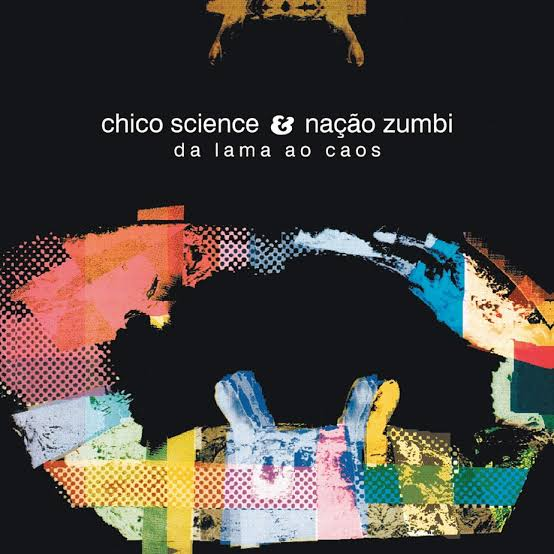
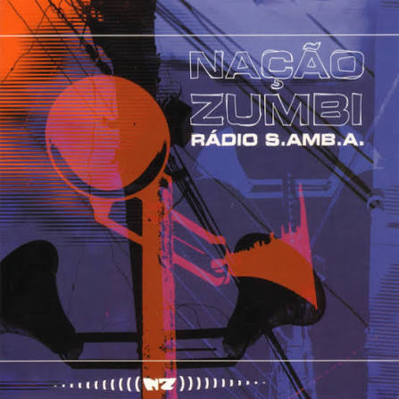

Da Lama ao Caos
Foi o primeiro disco da banda, de 1994. É o mais ligado ao manguebeat.
De Recife, desde os anos 1990
Os cinco primeiros álbuns da banda.
Esses são os discos que a banda lançou de 1994 a 2002, do mais antigo ao mais novo.
| Ano | Álbum | Música de destaque |
|---|---|---|
| 1994 | Da Lama ao Caos | A Praieira |
| 1996 | Afrociberdelia | Maracatu Atômico |
| 1998 | CSNZ | A definir |
| 2000 | Rádio S.Amb.A. | Quando a Maré Encher |
| 2002 | Nação Zumbi | Meu Maracatu Pesa uma Tonelada |

Foi o primeiro disco da banda, de 1994. É o mais ligado ao manguebeat.

Disco de 1996, mais experimental. Mistura maracatu com sons eletrônicos.

Lançado em 2000, depois da morte do Chico Science. Tem a música Quando a Maré Encher.